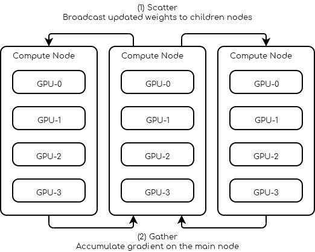

Guia do usuário¶
…or IDT’s list of opinionated howtos
Esta seção busca fornecer aos usuários da infraestrutura Apuana conhecimentos práticos, dicas e truques e comandos de exemplo.
Executando o seu código¶
Guia de comandos SLURM¶
Uso básico¶
A documentação do SLURM https://slurm.schedmd.com/documentation.html fornece informações extensas sobre os comandos disponíveis para consultar o status do cluster ou enviar trabalhos.
A seguir, são apresentados alguns exemplos básicos de como usar o SLURM.
Enviando trabalhos¶
Trabalho em lote¶
Para enviar um trabalho em lote, você precisa criar um script contendo o(s) comando(s) principal(is) que deseja executar nos recursos/nós alocados.
#!/bin/bash
#SBATCH --job-name=test
#SBATCH --output=job_output.txt
#SBATCH --error=job_error.txt
#SBATCH --ntasks=1
#SBATCH --time=10:00
#SBATCH --mem=100Gb
module load python/3.5
python my_script.py
Seu script de trabalho é então enviado para o SLURM com sbatch (ref.)
$ sbatch job_script
sbatch: Submitted batch job 4323674
O diretório de trabalho do trabalho será aquele onde você executou o comando sbatch.
Dica
As diretivas do Slurm podem ser especificadas na linha de comando juntamente
com sbatch ou dentro do script de trabalho com uma linha iniciada por #SBATCH.
Job interativo¶
Os gerenciadores de carga geralmente executam trabalhos em lote para evitar ter que monitorar
sua progressão e deixar o agendador executá-lo assim que os recursos estiverem disponíveis.
Se você quiser acessar um shell enquanto utiliza recursos do cluster, pode enviar um trabalho
interativo onde o executável principal é um shell com o comando srun/salloc.
salloc
Iniciar um trabalho interativo no primeiro nó disponível com os recursos padrão
definidos no SLURM (1 tarefa/1 CPU). O comando srun aceita os mesmos argumentos
que sbatch, com exceção do ambiente que não é passado.
Dica
Para passar seu ambiente atual para um trabalho interativo, adicione --preserve-env ao srun.
salloc também pode ser usado e é principalmente um invólucro em torno de srun se
fornecido sem mais informações, mas fornece mais flexibilidade se, por exemplo,
você quiser obter uma alocação em vários nós.
Argumentos de submissão de tarefas¶
Para selecionar com precisão os recursos para sua tarefa, vários argumentos estão disponíveis. Os mais importantes são:
Argumento |
Descrição |
|---|---|
-n, –ntasks=<number> |
O número de tarefas no seu script, geralmente é 1. |
-c, –cpus-per-task=<ncpus> |
O número de núcleos para cada tarefa. |
-t, –time=<time> |
Tempo solicitado para o seu trabalho. |
–mem=<size[units]> |
Memória solicitada para todas as tarefas do seu trabalho. |
–gres=<list> |
Selecione recursos genéricos, como GPUs, para o seu trabalho: |
Dica
Sempre considere solicitar a quantidade adequada de recursos para melhorar o agendamento do seu trabalho (trabalhos pequenos sempre são executados primeiro).
verificando job status¶
Para exibir os jobs atualmente na fila, use squeue e para obter apenas seus trabalhos digite squeue -u $USER
$ squeue -u $USER
JOBID USER NAME ST START_TIME TIME NODES CPUS TRES_PER_NMIN_MEM NODELIST (REASON) COMMENT
133 my_username myjob R 2019-03-28T18:33 0:50 1 2 N/A 7000M node1 (None) (null)
Nota
O número máximo de trabalhos que podem ser enviados ao sistema por usuário é 1000 (MaxSubmitJobs=1000) em qualquer momento da associação dada. Se este limite for atingido, novas solicitações de envio serão negadas até que os trabalhos existentes nesta associação sejam concluídos.
Removendo um job¶
Para cancelar o seu trabalho, simplesmente use scancel.
scancel 4323674
Particionamento¶
Como não temos muitas GPUs no cluster, os recursos devem ser compartilhados de forma justa.
A opção --partition=/-p do SLURM permite que você defina a prioridade necessária para um trabalho.
Cada trabalho atribuído com uma prioridade pode interromper trabalhos com prioridade mais baixa:
unkillable > main > long. Uma vez interrompido, seu trabalho é morto sem aviso prévio e é automaticamente
reenfileirado na mesma partição até que os recursos estejam disponíveis. (Para aproveitar um mecanismo de
interrupção diferente, consulte a documentação do SLURM).
Handling preemption)
Flag |
Max Resource Usage |
Max Time |
Note |
|---|---|---|---|
--partition=unkillable |
6 CPUs, mem=32G, 1 GPU |
2 days |
|
--partition=unkillable-cpu |
2 CPUs, mem=16G |
2 days |
CPU-only jobs |
--partition=short-unkillable |
24 CPUs, mem=128G, 4 GPUs |
3 hours (!) |
Large but short jobs |
--partition=main |
8 CPUs, mem=48G, 2 GPUs |
5 days |
|
--partition=main-cpu |
8 CPUs, mem=64G |
5 days |
CPU-only jobs |
--partition=long |
no limit of resources |
7 days |
|
--partition=long-cpu |
no limit of resources |
7 days |
CPU-only jobs |
Aviso
Historicamente, antes da introdução em 2022 de nós exclusivos para CPU
(por exemplo, a série “cn-f”), trabalhos apenas com CPU eram executados lado
a lado com trabalhos com GPU em nós de GPU. Para evitar que esses trabalhos
obstruíssem qualquer trabalho com GPU, eles sempre tinham a menor prioridade
e eram preemptíveis. Isso foi implementado automaticamente atribuindo-os a uma
das partições agora obsoletas cpu_jobs, cpu_jobs_low ou cpu_jobs_low-grace.
Não use mais esses nomes de partição. Prefira os nomes de partição *-cpu definidos acima.
Para fins de compatibilidade com versões anteriores, os nomes das partições legadas são traduzidos
para seu equivalente efetivo long-cpu, mas eventualmente serão removidos completamente.
Nota
Como conveniência, se você solicitar a partição unkillable, main ou long para um trabalho
apenas com CPU, a partição será traduzida automaticamente para seu equivalente -cpu.
Preocupações e soluções de portabilidade¶
Ao trabalhar em um projeto de software, é importante estar ciente de todo o software e bibliotecas nos quais o projeto depende e listá-los explicitamente e sob um sistema de controle de versão de tal forma que possam ser facilmente instalados e disponibilizados em diferentes sistemas. As vantagens são significativas:
Facilidade de instalação e execução no cluster
Facilidade de colaboração
Melhor reprodutibilidade
Para alcançar isso, tente sempre manter em mente os seguintes aspectos:
- Versões: Para cada dependência, certifique-se de ter algum registro da versão
específica que está usando durante o desenvolvimento. Dessa forma, no futuro, você poderá reproduzir o ambiente original que sabe ser compatível. De fato, quanto mais tempo passa, mais provável é que novas versões de alguma dependência tenham alterações quebradas. O comando pip freeze pode criar tal registro para dependências do Python.
- Isolamento: Idealmente, cada um de seus projetos de software deve estar isolado dos outros.
O que isso significa é que atualizar o ambiente do projeto A não deve atualizar o ambiente do projeto B. Dessa forma, você pode instalar e atualizar software e bibliotecas livremente para o primeiro, sem se preocupar em quebrar o segundo (o que você pode não perceber até semanas depois, na próxima vez em que trabalhar no projeto B!) O isolamento pode ser alcançado usando Python Virtual environments and containers.
Gerenciando seus ambientes¶
Ambientes virtuais¶
Um ambiente virtual em Python é um ambiente local e isolado no qual você pode instalar ou desinstalar pacotes do Python sem interferir no ambiente global (ou em outros ambientes virtuais). Ele geralmente fica em um diretório (a localização varia dependendo se você usa venv, conda ou poetry). Para usar um ambiente virtual, você precisa ativá-lo. Ativar um ambiente define essencialmente variáveis de ambiente em seu shell para que:
pythonaponta para a versão correta do Python para aquele ambiente (diferentes ambientes virtuais podem usar
diferentes versões do Python!)
pythonprocura pacotes no ambiente virtualpip installinstala pacotes no ambiente virtualQuaisquer comandos de shell instalados via
pip installestão disponíveis
Para executar experimentos dentro de um ambiente virtual, você pode simplesmente ativá-lo no script fornecido para sbatch.
Pip/Virtualenv¶
O Pip é o gerenciador de pacotes preferido para Python e cada cluster fornece diversas versões do Python por meio do módulo associado, que vem com o pip. Para instalar novos pacotes, você primeiro precisará criar um espaço pessoal para que eles possam ser armazenados. A solução preferida (assim como é nos clusters da Digital Research Alliance do Canadá) é usar ambientes virtuais.
Primeiro, carregue o módulo Python que você deseja usar: .. code-block:: console
module load python/3.8
Então, crie um ambiente virtual no seu diretório home:
python -m venv $HOME/<env>
onde <env> é o nome do seu ambiente. Finalmente, ative o ambiente:
source $HOME/<env>/bin/activate
Agora você pode instalar qualquer pacote Python que desejar usando o comando pip, por exemplo:
pytorch:
pip install torch torchvision
Or Tensorflow:
pip install tensorflow-gpu
Conda¶
Outra solução para Python é usar o miniconda. https://docs.conda.io/en/latest/miniconda.html ou anaconda https://docs.anaconda.com
Usando módulos¶
Muito software, como Python e Conda, já está compilado e disponível no cluster por
meio do comando module e seus subcomandos. Em particular, se você deseja usar
o Python 3.7, basta fazer:
module load python/3.7
No uso de contêineres¶
Outra opção para criar código portátil é: Usando Conteiners no cluster.
- Containers são uma abordagem popular para implantar aplicativos, empacotando juntos muitas das dependências necessárias.
A ferramenta mais popular para isso é o Docker.
Singularity¶
Visão Geral¶
O que é singularidade¶
Executar o Docker no SLURM é um problema de segurança (por exemplo, executando como root, tendo a capacidade de montar qualquer diretório). A alternativa é usar o Singularity, que é uma solução popular no mundo de HPC.
Existe um bom nível de compatibilidade entre Docker e Singularity, e podemos encontrar muitas alegações exageradas sobre a capacidade de converter contêineres do Docker para Singularity sem qualquer atrito. Muitas vezes, imagens do DockerHub são 100% compatíveis com o Singularity e podem ser usadas sem atrito, mas as coisas ficam complicadas quando tentamos converter nossos próprios arquivos de construção do Docker em receitas do Singularity.
Links para documentação oficial¶
official Singularity user guide
official Singularity admin guide
Visão gerald dos passos usados na prática¶
Na maioria das vezes, o processo para criar e usar um contêiner Singularity é:
No seu computador Linux (em casa ou no trabalho)
selecione uma imagem Docker do DockerHub (por exemplo, pytorch/pytorch)
crie um arquivo de receita para o Singularity que comece com essa imagem do DockerHub
construa o arquivo de receita, criando assim o arquivo de imagem (por exemplo,
my-pytorch-image.sif)teste seu contêiner Singularity antes de enviá-lo para o cluster
rsync -av my-pytorch-image.sif <login-node>:Documents/my-singularity-images
No nó de login desse cluster
enfileire seus trabalhos com
sbatch ...(observe que seus trabalhos copiarão o arquivo
my-pytorch-image.sifpara $SLURM_TMPDIR e então iniciarão o Singularity com essa imagem) faça outra coisa enquanto espera que eles terminemenfileire mais trabalhos com o mesmo
my-pytorch-image.sif, reutilizando-o várias vezes
Nas próximas seções, você encontrará exemplos específicos ou dicas para realizar na prática as etapas destacadas acima.
Não, não no MacOS¶
Singularity não funciona no MacOS, até a data desta escrita em 2021. Docker realmente não roda no MacOS, mas o Docker instala silenciosamente uma máquina virtual executando Linux, o que torna a experiência agradável, e o usuário não precisa se preocupar com os detalhes de como o Docker faz isso.
Dado sua origem em HPC, o Singularity não fornece esse tipo de experiência sem problemas no MacOS, embora tecnicamente seja possível executá-lo dentro de uma máquina virtual Linux no MacOS.
Onde construir imagens¶
Construir imagens do Singularity é uma tarefa bastante pesada, que pode levar 20 minutos se você tiver muitas etapas na sua receita. Isso torna uma tarefa ruim para rodar em os nós de login de nossos clusters, especialmente se precisar ser executado regularmente.
No cluster Mila, temos a sorte de ter acesso irrestrito à internet nos nós de computação, o que significa que qualquer pessoa pode solicitar um nó de CPU interativo (sem necessidade de GPU) e construir suas imagens lá sem problemas.
Aviso
Não construa imagens do Singularity do zero toda vez que executar um
trabalho em um grande lote. Isso será um desperdício colossal de tempo de GPU e também de
largura de banda da internet. Se você configurar seu fluxo de trabalho corretamente
(por exemplo, usando caminhos de ligação para o seu código e dados), você pode passar meses reutilizando a mesma
imagem do Singularity my-pytorch-image.sif.
Construindo os containers¶
Construir um container é como criar um novo ambiente, exceto que os containers são muito mais poderosos, pois são sistemas autocontidos. Com o Singularity, existem duas maneiras de construir containers.
A primeira é fazê-lo você mesmo, é como quando você compra um novo laptop Linux e não sabe muito bem o que precisa, se perceber que algo está faltando, você o instala. Aqui, você pode obter um container vanilla com o Ubuntu chamado sandbox, você faz o login e instala cada pacote por si mesmo. Esse procedimento pode levar tempo, mas permitirá que você entenda como as coisas funcionam e o que precisa ser feito. Isso é recomendado se você precisa descobrir como as coisas serão compiladas ou se deseja instalar pacotes na hora Nos referiremos a este procedimento como singularity sandboxes.
A segunda maneira é mais como se você soubesse o que quer, então você escreve uma lista de tudo o que precisa, envia para o Singularity e ele instalará tudo para você. Essas listas são chamadas de singularity recipes.
Primeira maneira: construir e usar um sandbox¶
Você pode se perguntar: Em qual máquina devo construir um container?
Antes de tudo, você precisa escolher onde construirá o seu container. Essa operação requer muita memória e alto uso da CPU.
Aviso
NÃO construa containers em nenhum nó de login!
- (Recomendado para iniciantes) Se você precisar usar o apt-get, você deve construir
o container em seu laptop com privilégios de superusuário. Você só precisará instalar o Singularity em seu laptop. Usuários de Windows/Mac podem ver there e usuários de Ubuntu/Debian podem usar diretamente:
sudo apt-get install singularity-container
Nesse caso, para evitar muita entrada/saída (I/O) na rede, você deve definir o cache do Singularity localmente:
export SINGULARITY_CACHEDIR=$SLURM_TMPDIR
- Se você não pode instalar o Singularity em seu laptop e deseja usar o apt-get,
você pode usar o singularity-hub para construir seus containers e ler a seção Recipe_section.
Baixando containers da web.¶
Felizmente, você pode não precisar criar containers do zero, pois muitos já foram construídos para os softwares de deep learning mais comuns. Você pode encontrá-los na maioria em dockerhub.
Acesse dockerhub e selecione o container que você deseja baixar
Por exemplo, se você deseja obter a última versão do PyTorch com suporte para GPU (Substitua runtime por devel se precisar do conjunto completo de ferramentas do Cuda):
singularity pull docker://pytorch/pytorch:1.0.1-cuda10.0-cudnn7-runtime
Ou a última versão do TensorFlow:
singularity pull docker://tensorflow/tensorflow:latest-gpu-py3
Atualmente, a imagem baixada pytorch.simg ou tensorflow.simg é somente leitura,
o que significa que você não poderá instalar nada nela. A partir de agora, o PyTorch
será usado como exemplo. Se você estiver usando o TensorFlow, simplesmente substitua
todas as ocorrências de pytorch por tensorflow.
Como adicionar ou instalar coisas em um container¶
O primeiro passo é transformar o seu container somente leitura
pytorch-1.0.1-cuda10.0-cudnn7-runtime.simg em uma versão gravável que
permitirá que você adicione pacotes.
Aviso
Dependendo da versão do singularity que você está usando, o singularity criará um container com a extensão .simg ou .sif. Se você estiver usando arquivos .sif, substitua todas as ocorrências de .simg por .sif.
Dica
Se você quiser usar o apt-get, deve colocar sudo antes dos comandos a seguir
Este comando criará uma imagem gravável na pasta pytorch.
singularity build --sandbox pytorch pytorch-1.0.1-cuda10.0-cudnn7-runtime.simg
Então você precisará do seguinte comando para fazer login dentro do container.
singularity shell --writable -H $HOME:/home pytorch
Assim que você entrar no container, pode usar o pip e instalar tudo o que precisar
(ou usar apt-get se você construiu o container com sudo).
Aviso
O Singularity monta sua pasta pessoal, então se você instalar coisas no
diretório $HOME do seu container, elas serão instaladas no seu $HOME real!
Você deve instalar seus pacotes em /usr/local.
Criando diretórios úteis¶
Um dos benefícios dos containers é que você poderá usá-los em diferentes clusters. No entanto, para cada cluster, a localização das pastas de datasets e experimentos pode ser diferente. Para ser invariante em relação a essas localizações, criaremos alguns pontos de montagem úteis dentro do container:
mkdir /dataset
mkdir /tmp_log
mkdir /final_log
A partir de agora, você não precisará mais se preocupar em especificar onde buscar
seu conjunto de dados ao escrever seu código. Seu conjunto de dados estará sempre
em /dataset, independentemente do cluster que você estiver usando.
Testes¶
Se você tem algum código que deseja testar antes de finalizar o seu contêiner, você tem duas opções. Você pode entrar no seu contêiner e executar o código Python dentro dele com:
singularity shell --nv pytorch
Ou você pode executar seu comando diretamente com:
singularity exec --nv pytorch Python YOUR_CODE.py
Dica
—nv permite que o container use GPUs. Você não precisa disso se não planeja usar uma GPU.
Aviso
Não se esqueça de limpar o cache dos pacotes que você instalou nos containers.
Criando uma nova imagem a partir do sandbox¶
Depois que tudo o que você precisa estiver instalado dentro do contêiner, você precisa convertê-lo de volta em uma imagem singularity somente leitura com:
singularity build pytorch_final.simg pytorch
Segunda opção: Use receitas¶
Uma receita do Singularity é um arquivo que inclui especificações sobre a instalação de software, variáveis de ambiente, arquivos a serem adicionados e metadados do contêiner. É um ponto de partida para projetar qualquer contêiner personalizado. Em vez de baixar um contêiner e instalar seus pacotes manualmente, você pode especificar neste arquivo os pacotes que deseja e, em seguida, construir seu contêiner a partir deste arquivo.
Aqui está um exemplo simples de uma receita do Singularity que instala alguns pacotes:
################# Header: Define the base system you want to use ################
# Reference of the kind of base you want to use (e.g., docker, debootstrap, shub).
Bootstrap: docker
# Select the docker image you want to use (Here we choose tensorflow)
From: tensorflow/tensorflow:latest-gpu-py3
################# Section: Defining the system #################################
# Commands in the %post section are executed within the container.
%post
echo "Installing Tools with apt-get"
apt-get update
apt-get install -y cmake libcupti-dev libyaml-dev wget unzip
apt-get clean
echo "Installing things with pip"
pip install tqdm
echo "Creating mount points"
mkdir /dataset
mkdir /tmp_log
mkdir /final_log
# Environment variables that should be sourced at runtime.
%environment
# use bash as default shell
SHELL=/bin/bash
export SHELL
Um arquivo de receita contém duas partes: o “cabeçalho” (header) e “seções” (sections). No “cabeçalho”, você especifica qual sistema base deseja usar, pode ser qualquer contêiner do Docker ou do Singularity. Em “seções”, você pode listar as coisas que deseja instalar na subseção “post” ou listar as variáveis de ambiente que precisa carregar em cada execução na subseção “environment”. Para uma descrição mais detalhada, consulte singularity documentation.
Para construir um container singularity a partir de um arquivo de receita, você deve usar:
sudo singularity build <NAME_CONTAINER> <YOUR_RECIPE_FILES>
Aviso
Você sempre precisa usar o sudo ao construir um contêiner a partir de uma receita. Como não há acesso ao sudo no cluster, é necessário um computador pessoal ou o uso do singularity hub para construir um contêiner.
Construir receita no Singularity Hub¶
O Singularity Hub permite que os usuários criem contêineres a partir de receitas diretamente na nuvem do Singularity Hub, o que significa que você não precisa criar contêineres sozinho. Você precisa se registrar no singularity-hub e vincular sua conta do Singularity Hub à sua conta do GitHub, e então:
Crie um novo repositório no Github.
Adicione uma coleção no singularity-hub e selecione o repositório do Github que você criou.
Clone o repositório do Github em seu computador.
$ git clone <url>
Write the singularity recipe and save it as a file named Singularity.
Git add Singularity, commit and push on the master branch
$ git add Singularity $ git commit $ git push origin master
Neste ponto, os robôs do singularity-hub irão construir o contêiner para você, e você poderá baixá-lo do site ou diretamente usando:
singularity pull shub://<github_username>/<repository_name>
Exemplo: Receita com OpenAI gym, MuJoCo e Miniworld¶
Aqui está um exemplo de como você pode usar uma receita do Singularity para instalar um ambiente complexo como o OpenAI gym, MuJoCo e Miniworld em um contêiner baseado em PyTorch.
#This is a dockerfile that sets up a full Gym install with test dependencies
Bootstrap: docker
# Here we ll build our container upon the pytorch container
From: pytorch/pytorch:1.0-cuda10.0-cudnn7-runtime
# Now we'll copy the mjkey file located in the current directory inside the container's root
# directory
%files
mjkey.txt
# Then we put everything we need to install
%post
export PATH=$PATH:/opt/conda/bin
apt -y update && \
apt install -y keyboard-configuration && \
apt install -y \
python3-dev \
python-pyglet \
python3-opengl \
libhdf5-dev \
libjpeg-dev \
libboost-all-dev \
libsdl2-dev \
libosmesa6-dev \
patchelf \
ffmpeg \
xvfb \
libhdf5-dev \
openjdk-8-jdk \
wget \
git \
unzip && \
apt clean && \
rm -rf /var/lib/apt/lists/*
pip install h5py
# Download Gym and MuJoCo
mkdir /Gym && cd /Gym
git clone https://github.com/openai/gym.git || true && \
mkdir /Gym/.mujoco && cd /Gym/.mujoco
wget https://www.roboti.us/download/mjpro150_linux.zip && \
unzip mjpro150_linux.zip && \
wget https://www.roboti.us/download/mujoco200_linux.zip && \
unzip mujoco200_linux.zip && \
mv mujoco200_linux mujoco200
# Export global environment variables
export MUJOCO_PY_MJKEY_PATH=/Gym/.mujoco/mjkey.txt
export MUJOCO_PY_MUJOCO_PATH=/Gym/.mujoco/mujoco150/
export LD_LIBRARY_PATH=$LD_LIBRARY_PATH:/Gym/.mujoco/mjpro150/bin
export LD_LIBRARY_PATH=$LD_LIBRARY_PATH:/Gym/.mujoco/mujoco200/bin
export LD_LIBRARY_PATH=$LD_LIBRARY_PATH:/usr/local/bin
cp /mjkey.txt /Gym/.mujoco/mjkey.txt
# Install Python dependencies
wget https://raw.githubusercontent.com/openai/mujoco-py/master/requirements.txt
pip install -r requirements.txt
# Install Gym and MuJoCo
cd /Gym/gym
pip install -e '.[all]'
# Change permission to use mujoco_py as non sudoer user
chmod -R 777 /opt/conda/lib/python3.6/site-packages/mujoco_py/
pip install --upgrade minerl
# Export global environment variables
%environment
export SHELL=/bin/sh
export MUJOCO_PY_MJKEY_PATH=/Gym/.mujoco/mjkey.txt
export MUJOCO_PY_MUJOCO_PATH=/Gym/.mujoco/mujoco150/
export LD_LIBRARY_PATH=$LD_LIBRARY_PATH:/Gym/.mujoco/mjpro150/bin
export LD_LIBRARY_PATH=$LD_LIBRARY_PATH:/Gym/.mujoco/mujoco200/bin
export LD_LIBRARY_PATH=$LD_LIBRARY_PATH:/usr/local/bin
export PATH=/Gym/gym/.tox/py3/bin:$PATH
%runscript
exec /bin/sh "$@"
Here is the same recipe but written for TensorFlow:
#This is a dockerfile that sets up a full Gym install with test dependencies
Bootstrap: docker
# Here we ll build our container upon the tensorflow container
From: tensorflow/tensorflow:latest-gpu-py3
# Now we'll copy the mjkey file located in the current directory inside the container's root
# directory
%files
mjkey.txt
# Then we put everything we need to install
%post
apt -y update && \
apt install -y keyboard-configuration && \
apt install -y \
python3-setuptools \
python3-dev \
python-pyglet \
python3-opengl \
libjpeg-dev \
libboost-all-dev \
libsdl2-dev \
libosmesa6-dev \
patchelf \
ffmpeg \
xvfb \
wget \
git \
unzip && \
apt clean && \
rm -rf /var/lib/apt/lists/*
# Download Gym and MuJoCo
mkdir /Gym && cd /Gym
git clone https://github.com/openai/gym.git || true && \
mkdir /Gym/.mujoco && cd /Gym/.mujoco
wget https://www.roboti.us/download/mjpro150_linux.zip && \
unzip mjpro150_linux.zip && \
wget https://www.roboti.us/download/mujoco200_linux.zip && \
unzip mujoco200_linux.zip && \
mv mujoco200_linux mujoco200
# Export global environment variables
export MUJOCO_PY_MJKEY_PATH=/Gym/.mujoco/mjkey.txt
export MUJOCO_PY_MUJOCO_PATH=/Gym/.mujoco/mujoco150/
export LD_LIBRARY_PATH=$LD_LIBRARY_PATH:/Gym/.mujoco/mjpro150/bin
export LD_LIBRARY_PATH=$LD_LIBRARY_PATH:/Gym/.mujoco/mujoco200/bin
export LD_LIBRARY_PATH=$LD_LIBRARY_PATH:/usr/local/bin
cp /mjkey.txt /Gym/.mujoco/mjkey.txt
# Install Python dependencies
wget https://raw.githubusercontent.com/openai/mujoco-py/master/requirements.txt
pip install -r requirements.txt
# Install Gym and MuJoCo
cd /Gym/gym
pip install -e '.[all]'
# Change permission to use mujoco_py as non sudoer user
chmod -R 777 /usr/local/lib/python3.5/dist-packages/mujoco_py/
# Then install miniworld
cd /usr/local/
git clone https://github.com/maximecb/gym-miniworld.git
cd gym-miniworld
pip install -e .
# Export global environment variables
%environment
export SHELL=/bin/bash
export MUJOCO_PY_MJKEY_PATH=/Gym/.mujoco/mjkey.txt
export MUJOCO_PY_MUJOCO_PATH=/Gym/.mujoco/mujoco150/
export LD_LIBRARY_PATH=$LD_LIBRARY_PATH:/Gym/.mujoco/mjpro150/bin
export LD_LIBRARY_PATH=$LD_LIBRARY_PATH:/Gym/.mujoco/mujoco200/bin
export LD_LIBRARY_PATH=$LD_LIBRARY_PATH:/usr/local/bin
export PATH=/Gym/gym/.tox/py3/bin:$PATH
%runscript
exec /bin/bash "$@"
Usando Conteiners no cluster¶
Como usar conteiners no cluster¶
Em todo cluster com Slurm, os conjuntos de dados e resultados intermediários
devem ser armazenados em $SLURM_TMPDIR, enquanto os resultados finais do
experimento devem ser salvos em $SCRATCH. Para usar o contêiner que você criou,
é necessário copiá-lo para o cluster que deseja usar.
Aviso
Você sempre deve armazenar o seu contêiner em $SCRATCH!
Em seguida, reserve um nó com srun/sbatch, copie o contêiner e o seu conjunto de
dados para o nó fornecido pelo SLURM (ou seja, em $SLURM_TMPDIR) e execute o
código <YOUR_CODE> dentro do contêiner <YOUR_CONTAINER> com:
singularity exec --nv -H $HOME:/home -B $SLURM_TMPDIR:/dataset/ -B $SLURM_TMPDIR:/tmp_log/ -B $SCRATCH:/final_log/ $SLURM_TMPDIR/<YOUR_CONTAINER> python <YOUR_CODE>
Remember that /dataset, /tmp_log and /final_log were created in the
previous section. Now each time, we’ll use singularity, we are explicitly
telling it to mount $SLURM_TMPDIR on the cluster’s node in the folder
/dataset inside the container with the option -B such that each dataset
downloaded by PyTorch in /dataset will be available in $SLURM_TMPDIR.
This will allow us to have code and scripts that are invariant to the cluster
environment. The option -H specify what will be the container’s home. For
example, if you have your code in $HOME/Project12345/Version35/ you can
specify -H $HOME/Project12345/Version35:/home, thus the container will only
have access to the code inside Version35.
If you want to run multiple commands inside the container you can use:
Lembre-se de que /dataset, /tmp_log e /final_log foram criados na seção anterior.
Agora, cada vez que usarmos o singularity, estamos explicitamente dizendo a ele
para montar $SLURM_TMPDIR no nó do cluster na pasta /dataset dentro do container
com a opção -B, de modo que cada conjunto de dados baixado pelo PyTorch em /dataset
estará disponível em $SLURM_TMPDIR.
Isso nos permitirá ter código e scripts que são invariantes ao ambiente do cluster.
A opção -H especifica qual será o diretório raiz do container. Por exemplo, se você
tem seu código em $HOME/Projeto12345/Versao35/, você pode especificar
-H $HOME/Projeto12345/Versao35:/home, assim o container terá acesso apenas ao código dentro de Versao35.
Se você quiser executar vários comandos dentro do container, pode usar:
singularity exec --nv -H $HOME:/home -B $SLURM_TMPDIR:/dataset/ \
-B $SLURM_TMPDIR:/tmp_log/ -B $SCRATCH:/final_log/ \
$SLURM_TMPDIR/<YOUR_CONTAINER> bash -c 'pwd && ls && python <YOUR_CODE>'
Exemplo: Caso interativo (srun/salloc)¶
Depois de obter uma sessão interativa com o SLURM, copie <YOUR_CONTAINER> e
<YOUR_DATASET> para $SLURM_TMPDIR.
# 0. Get an interactive session
$ srun --gres=gpu:1
# 1. Copy your container on the compute node
$ rsync -avz $SCRATCH/<YOUR_CONTAINER> $SLURM_TMPDIR
# 2. Copy your dataset on the compute node
$ rsync -avz $SCRATCH/<YOUR_DATASET> $SLURM_TMPDIR
Então, use o comando singularity shell para obter um shell dentro do contêiner.
# 3. Get a shell in your environment
$ singularity shell --nv \
-H $HOME:/home \
-B $SLURM_TMPDIR:/dataset/ \
-B $SLURM_TMPDIR:/tmp_log/ \
-B $SCRATCH:/final_log/ \
$SLURM_TMPDIR/<YOUR_CONTAINER>
# 4. Execute your code
<Singularity_container>$ python <YOUR_CODE>
or use singularity exec to execute <YOUR_CODE>.
# 3. Execute your code
$ singularity exec --nv \
-H $HOME:/home \
-B $SLURM_TMPDIR:/dataset/ \
-B $SLURM_TMPDIR:/tmp_log/ \
-B $SCRATCH:/final_log/ \
$SLURM_TMPDIR/<YOUR_CONTAINER> \
python <YOUR_CODE>
Você também pode criar o seguinte alias para facilitar sua vida:
alias my_env='singularity exec --nv \
-H $HOME:/home \
-B $SLURM_TMPDIR:/dataset/ \
-B $SLURM_TMPDIR:/tmp_log/ \
-B $SCRATCH:/final_log/ \
$SLURM_TMPDIR/<YOUR_CONTAINER>'
Isso permitirá que você execute qualquer código com:
my_env python <YOUR_CODE>
Exemplo: caso sbatch¶
Você também pode criar um script sbatch:
#!/bin/bash
#SBATCH --cpus-per-task=6 # Ask for 6 CPUs
#SBATCH --gres=gpu:1 # Ask for 1 GPU
#SBATCH --mem=10G # Ask for 10 GB of RAM
#SBATCH --time=0:10:00 # The job will run for 10 minutes
# 1. Copy your container on the compute node
rsync -avz $SCRATCH/<YOUR_CONTAINER> $SLURM_TMPDIR
# 2. Copy your dataset on the compute node
rsync -avz $SCRATCH/<YOUR_DATASET> $SLURM_TMPDIR
# 3. Executing your code with singularity
singularity exec --nv \
-H $HOME:/home \
-B $SLURM_TMPDIR:/dataset/ \
-B $SLURM_TMPDIR:/tmp_log/ \
-B $SCRATCH:/final_log/ \
$SLURM_TMPDIR/<YOUR_CONTAINER> \
python "<YOUR_CODE>"
# 4. Copy whatever you want to save on $SCRATCH
rsync -avz $SLURM_TMPDIR/<to_save> $SCRATCH
Problema com as bibliotecas PyBullet e OpenGL¶
Se você estiver executando certos ambientes do gym que requerem o pyglet,
você pode encontrar um problema ao executar sua instância do singularity
com os drivers Nvidia usando a flag --nv. Isso acontece porque a flag --nv
também fornece as bibliotecas do OpenGL:
libGL.so.1 => /.singularity.d/libs/libGL.so.1
libGLX.so.0 => /.singularity.d/libs/libGLX.so.0
Se você não está tendo esses problemas com pyglet, provavelmente não precisa se
preocupar com isso. Caso contrário, você pode resolver esses problemas com apt-get install -y
libosmesa6-dev mesa-utils mesa-utils-extra libgl1-mesa-glx e, em seguida, certificar-se de que
seu LD_LIBRARY_PATH aponte para essas bibliotecas antes das que estão em / .singularity.d / libs.
%environment
# ...
export LD_LIBRARY_PATH=/usr/lib/x86_64-linux-gnu/mesa:$LD_LIBRARY_PATH
Apuana cluster¶
No cluster Apuana, $SCRATCH ainda não está definido, você deve adicionar os
resultados do experimento que deseja manter em /network/scratch/<u>/<username>/.
Para usar o script sbatch acima e para corresponder a outros nomes de ambiente de
cluster, você pode definir $SCRATCH como um alias para /network/scratch/<u>/<username> com:
echo "export SCRATCH=/network/scratch/${USER:0:1}/$USER" >> ~/.bashrc
Então, você pode seguir o procedimento geral explicado acima.
Compartilhando dados com ACLs¶
Os bits de permissão regulares são ferramentas extremamente limitadas: eles controlam o acesso por meio de apenas três conjuntos de bits - usuário proprietário, grupo proprietário e todos os outros. Portanto, o acesso é ou muito restrito (0700 permite acesso apenas ao usuário proprietário) ou muito amplo (770 dá todas as permissões para todos no mesmo grupo, e 777 para literalmente todos).
As ACLs (Listas de Controle de Acesso) são uma expansão dos bits de permissão que permitem um controle mais granular de acessos a um arquivo. Elas podem ser usadas para permitir que usuários específicos acessem arquivos e pastas, mesmo que as permissões padrão conservadoras os tenham negado esse acesso.
Como exemplo ilustrativo, para usar as ACLs para permitir que $USER (a si mesmo) compartilhe com $USER2 (outra pessoa) uma hierarquia de pastas “playground” no sistema de arquivos de rascunho do Apuana em um local
/network/scratch/${USER:0:1}/$USER/X/Y/Z/...
de maneira segura e que permita que ambos os usuários leiam, escrevam, executem, pesquisem e excluam os arquivos um do outro:
-d renders this permission a “default” / inheritable one)setfacl -Rdm user:${USER}:rwx /network/scratch/${USER:0:1}/$USER/X/Y/Z/
Nota
A importância de fazer este passo aparentemente redundante primeiro é que arquivos e pastas são sempre de propriedade de apenas uma pessoa, quase sempre o seu criador (o UID será do criador, o GID geralmente também). Se esse usuário não for você, você não terá acesso a esses arquivos a menos que a outra pessoa especificamente os dê a você - ou esses arquivos herdem uma ACL padrão que permita acesso total.
This Esta é a ACL padrão herdada que serve esse propósito.
-d renders this permission a “default” / inheritable one)setfacl -Rdm user:${USER2}:rwx /network/scratch/${USER:0:1}/$USER/X/Y/Z/
setfacl -Rm user:${USER2}:rwx /network/scratch/${USER:0:1}/$USER/X/Y/Z/
Nota
- O objetivo de conceder permissões primeiro para arquivos futuros e depois para arquivos
existentes é evitar uma condição de corrida em que, após o primeiro comando
setfacl, a outra pessoa possa criar arquivos aos quais o segundo comandosetfaclnão se aplica.
Non-recursive (!!!!)
- May also grant
:rxin unlikely event others listing your folders on the path is not troublesome or desirable.
- May also grant
setfacl -m user:${USER2}:x /network/scratch/${USER:0:1}/$USER/X/Y/
setfacl -m user:${USER2}:x /network/scratch/${USER:0:1}/$USER/X/
setfacl -m user:${USER2}:x /network/scratch/${USER:0:1}/$USER/
Nota
Para acessar um arquivo, todas as pastas desde o diretório raiz (/) até a pasta pai
em questão devem ser pesquisáveis (+x) pelo usuário em questão. Isso já é o caso
para todos os usuários em pastas como /, /network e /network/scratch, mas os usuários
devem conceder acesso explicitamente a alguns ou a todos os usuários, seja por meio de
permissões básicas ou adicionando ACLs, para pelo menos /network/scratch/${USER:0:1}/$USER, $HOME e subpastas.
Para permitir bruscamente que todos os usuários pesquisem uma pasta (pense duas vezes!), o seguinte comando pode ser usado:
chmod a+x /network/scratch/${USER:0:1}/$USER/
Nota
Para obter mais informações sobre
setfacle resolução de caminho/verificação de acesso, considere os seguintes comandos de visualização de documentação:
man setfaclman path_resolution
Visualizando e Verificando ACLs¶
getfacl /path/to/folder/or/file
1: # file: somedir/
2: # owner: lisa
3: # group: staff
4: # flags: -s-
5: user::rwx
6: user:joe:rwx #effective:r-x
7: group::rwx #effective:r-x
8: group:cool:r-x
9: mask::r-x
10: other::r-x
11: default:user::rwx
12: default:user:joe:rwx #effective:r-x
13: default:group::r-x
14: default:mask::r-x
15: default:other::---
Nota
man getfacl
Nós Múltiplos¶
Paralelismo de Dados¶
Solicite 3 nós com pelo menos 4 GPUs cada um.
#!/bin/bash
# Number of Nodes
#SBATCH --nodes=3
# Number of tasks. 3 (1 per node)
#SBATCH --ntasks=3
# Number of GPU per node
#SBATCH --gres=gpu:4
#SBATCH --gpus-per-node=4
# 16 CPUs per node
#SBATCH --cpus-per-gpu=4
# 16Go per nodes (4Go per GPU)
#SBATCH --mem=16G
# we need all nodes to be ready at the same time
#SBATCH --wait-all-nodes=1
# Total resources:
# CPU: 16 * 3 = 48
# RAM: 16 * 3 = 48 Go
# GPU: 4 * 3 = 12
# Setup our rendez-vous point
RDV_ADDR=$(hostname)
WORLD_SIZE=$SLURM_JOB_NUM_NODES
# -----
srun -l torchrun \
--nproc_per_node=$SLURM_GPUS_PER_NODE\
--nnodes=$WORLD_SIZE\
--rdzv_id=$SLURM_JOB_ID\
--rdzv_backend=c10d\
--rdzv_endpoint=$RDV_ADDR\
training_script.py
Você pode encontrar abaixo um esboço de um script do PyTorch sobre como um treinador multi-nó pode ser elaborado.
import os
import torch.distributed as dist
class Trainer:
def __init__(self):
self.local_rank = None
self.chk_path = ...
self.model = ...
@property
def device_id(self):
return self.local_rank
def load_checkpoint(self, path):
self.chk_path = path
# ...
def should_checkpoint(self):
# Note: only one worker saves its weights
return self.global_rank == 0 and self.local_rank == 0
def save_checkpoint(self):
if self.chk_path is None:
return
# Save your states here
# Note: you should save the weights of self.model not ddp_model
# ...
def initialize(self):
self.global_rank = int(os.environ.get("RANK", -1))
self.local_rank = int(os.environ.get("LOCAL_RANK", -1))
assert self.global_rank >= 0, 'Global rank should be set (Only Rank 0 can save checkpoints)'
assert self.local_rank >= 0, 'Local rank should be set'
dist.init_process_group(backend="gloo|nccl")
def sync_weights(self, resuming=False):
if resuming:
# in the case of resuming all workers need to load the same checkpoint
self.load_checkpoint()
# Wait for everybody to finish loading the checkpoint
dist.barrier()
return
# Make sure all workers have the same initial weights
# This makes the leader save his weights
if self.should_checkpoint():
self.save_checkpoint()
# All workers wait for the leader to finish
dist.barrier()
# All followers load the leader's weights
if not self.should_checkpoint():
self.load_checkpoint()
# Leader waits for the follower to load the weights
dist.barrier()
def dataloader(self, dataset, batch_size):
train_sampler = ElasticDistributedSampler(dataset)
train_loader = DataLoader(
dataset,
batch_size=batch_size,
num_workers=4,
pin_memory=True,
sampler=train_sampler,
)
return train_loader
def train_step(self):
# Your batch processing step here
# ...
pass
def train(self, dataset, batch_size):
self.sync_weights()
ddp_model = torch.nn.parallel.DistributedDataParallel(
self.model,
device_ids=[self.device_id],
output_device=self.device_id
)
loader = self.dataloader(dataset, batch_size)
for epoch in range(100):
for batch in iter(loader):
self.train_step(batch)
if self.should_checkpoint():
self.save_checkpoint()
def main():
trainer = Trainer()
trainer.load_checkpoint(path)
tainer.initialize()
trainer.train(dataset, batch_size)
Nota
“Para contornar o GIL (Bloqueio Global do Interpretador) do Python, o PyTorch cria um processo para cada GPU. No exemplo acima, isso significa que pelo menos 12 processos são criados, pelo menos 4 em cada nó.”